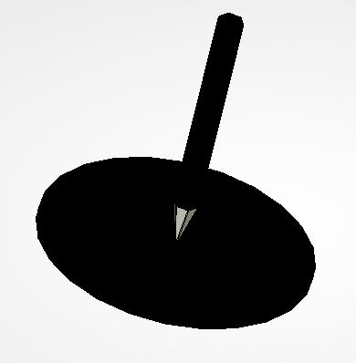
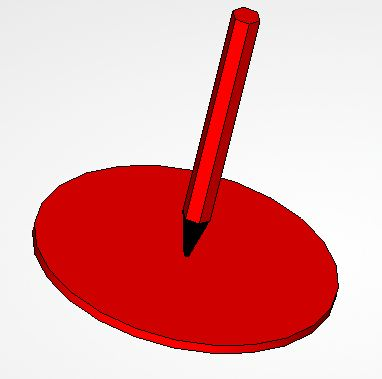
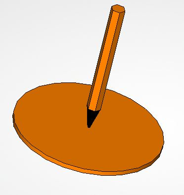
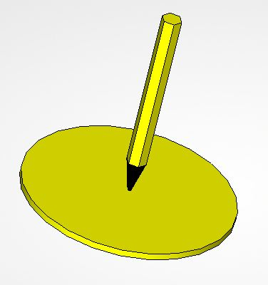
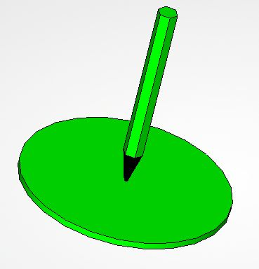
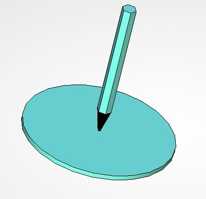
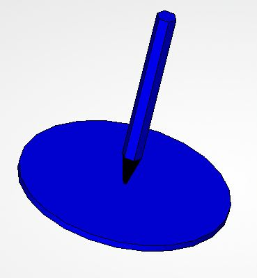
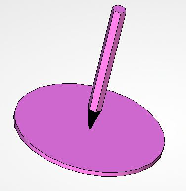
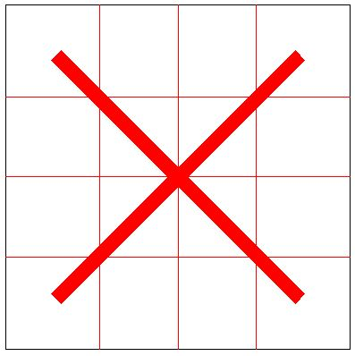

6. Геометрическая раскраска
- Попробуйте нарисовать узор или закрасить картинку построением многоугольников с заливкой цветом.
- Для построения контура многоугольника щёлкайте левой кнопкой мыши в вершинах, для построения замыкающей линии
сделайте щелчок правой кнопкой мыши в последней вершине.
- Цвет заливки можно выбирать на панели или включить случайный выбор.
- Убрать часть изображения можно указав точками контур для удаления. В конечной точке щелчёк правой кнопкой мыши. Чтобы продолжить рисование щёлкните по любому цвету заливки.
Для удаления всего обновить страницу (клавиша F5).
- Для выбора картинки для раскраски отметьте один из вариантов точкой.
Цвет заливки








Убрать/показать разметку
